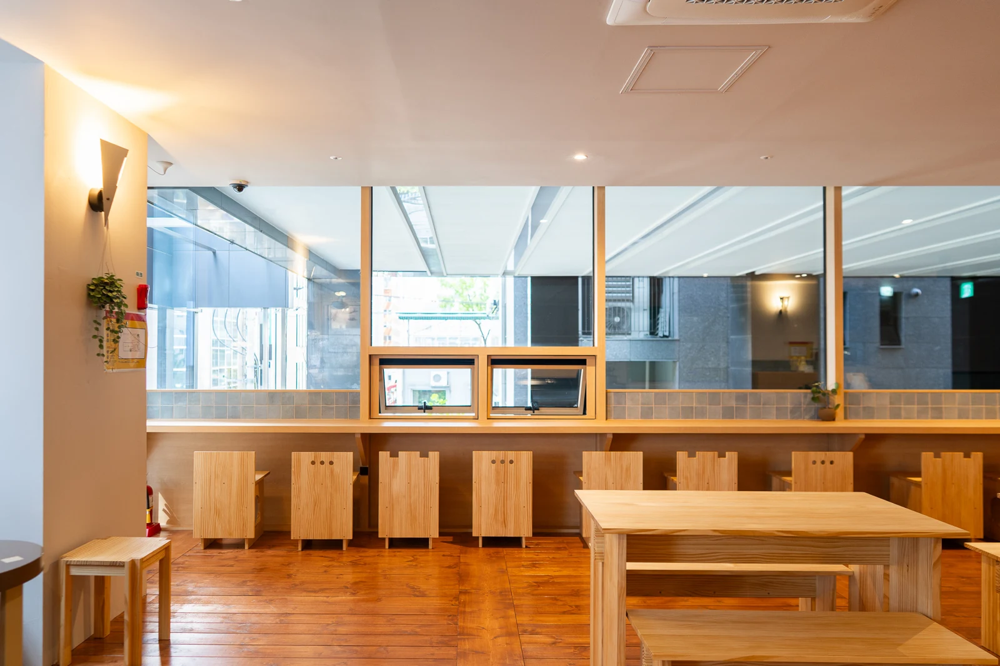
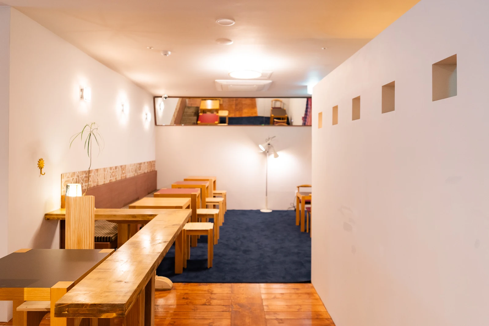

바게트 & 깜빠뉴
매일의 테이블에 놓기 좋은 기본빵.
YOUR EVERYDAY COFFEE & BREAD HOUSE
같은 건물에서 매일 굽는 빵.
강남에서 만나는 넓고 편안한 시간.

WHAT ARE YOU IN THE MOOD FOR?
바게트와 깜빠뉴부터
한 끼가 되는 사워도우 파니니까지.
FROM OUR HOUSE, TO YOUR TABLE.당일 메뉴와 판매 수량은 매장에서 확인해주세요. 사진은 하프하우스의 실제 메뉴 아카이브입니다.
ROOM FOR YOUR DAY
둘이 마주 앉는 데이트부터 여럿이 함께하는 모임까지.
1층과 2층, 편안한 자리를 찾아보세요.



BAKED DOWNSTAIRS. ENJOYED UPSTAIRS.
같은 건물 지하 2층의 베이커리 랩.
매일 만든 빵을 위층 매장으로 올려요.
기본빵을 잘하는 곳.
하프하우스가 지키고 싶은 가장 단순한 기준입니다.
MAKE IT YOURS
토스·F45 강남 대관, 토라젤 팝업.
다양한 만남을 함께해왔습니다.
바스크·말차 바스크 예약 문의
사전예약 10% 할인 진행 예정 · 조건은 상담 시 안내
COME SAY HELLO
서울 강남구 강남대로84길 13
강남역 KR타워 1층 · 2층
같은 건물 지하 2층 · 베이커리 랩
영업시간과 임시 휴무는 방문 전 공식 채널에서 확인해주세요.
새로운 메뉴와 팝업 소식,
하프하우스의 일상을 만나보세요.